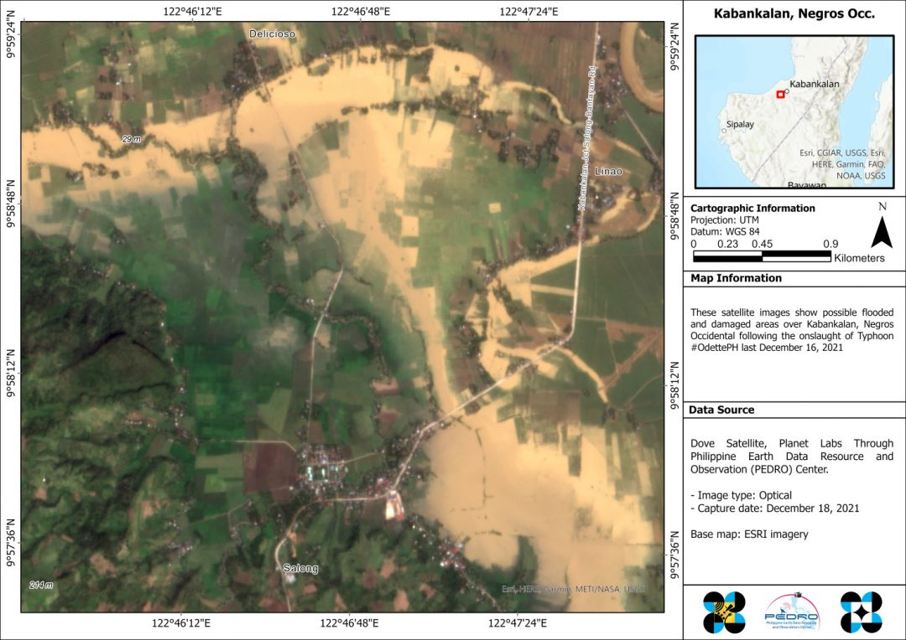

Damage in Negros Occidental During typhoon odette

Ilog, Kabankalan and Sipalay, Negros Occidental
Odette also substantially ravaged some parts of Negros Occidental. Below are images of the cities of Kabankalan, Sipalay and Municipality of Ilog. According to the same NDRRMC report, around 68,000 families were affected with a total of 29 reported casualties in these three cities. In total, Negros Occidental suffered P2.1 billion in damages in agriculture.
Using a combination of the Normalized Difference Water Index (NDWI) and a thresholding technique, researchers from the STAMINA4Space Program were able to map the potential amount of flooding in the locations, as well as map likely flooded highways.
The map of Kabankalan and Ilog in the satellite image below was taken on December 18, 2021. Approximately 2,958.3 hectares (ha) of land were flooded in this report, with 2,351.6 ha of flooded crops. According to the NDRRMC study, farm damages were P273 million in Kabankalan City and P6.2 million in Ilog Municipality.